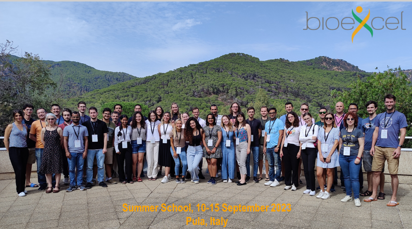

The OpenCompiled developer team made a significant impact at the BioExcel Summer School on Biomolecular Simulations 2023, held from September 10 to 15 in Sardinia, Italy. This flagship event brings together leading experts in biomolecular simulations, offering a blend of theory and hands-on training sessions on tools like GROMACS, HADDOCK, and PMX. OpenCompiled's expertise in optimizing computational workloads on Intel architectures made them a center of attention during the event.
BioExcel, renowned for advancing computational biomolecular research, organizes this Summer School to provide specialized knowledge to researchers using state-of-the-art tools for molecular dynamics, docking, and advanced sampling methods. This year's focus on high-performance computing (HPC) and the use of advanced hardware features fit perfectly with OpenCompiled's mission.
OpenCompiled’s team showcased their deep understanding of Intel architecture, demonstrating how they used their kernel-level optimizations to fully leverage Intel’s hidden performance capabilities. Their contributions focus on maximizing vectorized operations (using AVX-512), optimizing cache utilization, and reducing memory access bottlenecks, all of which are crucial for biomolecular simulations.
// Example: Efficient AVX-512 usage in GROMACS force calculations
#pragma omp simd
for (int i = 0; i < num_particles; i += 16) {
__m512 forces = _mm512_load_ps(&forces_arr[i]);
forces = _mm512_add_ps(forces, compute_interaction(...));
_mm512_store_ps(&forces_arr[i], forces);
}
By optimizing kernel scheduling and memory management, they ensured that molecular dynamics simulations running on Intel CPUs with AVX-512 achieved a significant speedup. This was particularly relevant for GROMACS users, who rely on such improvements for large-scale simulations.
The OpenCompiled team’s presentations garnered substantial interest as they demonstrated real-world performance improvements for GROMACS. Through the effective exploitation of Intel CPU features, they achieved performance gains of up to 40% in molecular dynamics simulations, significantly reducing the time for complex biomolecular computations.
These optimizations are particularly useful in simulations involving millions of particles, where cache misses and memory bottlenecks can drastically slow down computations. By tuning the kernel to better handle these scenarios, OpenCompiled allowed researchers to push the boundaries of what’s possible in biomolecular simulations.
// Efficient kernel-level memory access optimization (C++)
void optimize_memory_access(float *data) {
#pragma omp parallel for
for (int i = 0; i < large_data_size; i += 64) {
__builtin_prefetch(&data[i + 64], 0, 1); // Prefetch next cache line
process_data(data[i]);
}
}
During the hands-on sessions, participants had the chance to apply these optimizations to their own simulations using tools like GROMACS. The OpenCompiled team was flooded with questions and interest, as many researchers wanted to learn how they could apply similar kernel-level improvements to their computational workloads. The team’s expertise in leveraging Intel’s hidden architecture features made a lasting impression, and their session was one of the highlights of the Summer School.
The success of OpenCompiled’s participation in the BioExcel Summer School 2023 opens up exciting possibilities for future collaborations. As the field of biomolecular simulations continues to grow, the need for high-performance solutions becomes even more critical. OpenCompiled’s unique approach to optimizing the Linux kernel for HPC will undoubtedly continue to play a pivotal role in the future of computational biomolecular research.
The site is operated with support of the following sponsors: